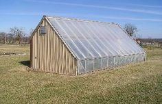
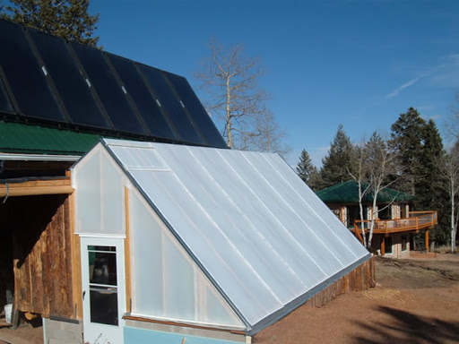

This type of greenhouse is constructed on hilly terrain. The roofs are of unequal width; make the structure adaptable to the side slopes of hill. This type of greenhouses is seldom used now-a-days as it is not adaptable for automation An uneven-span greenhouse is a greenhouse with one roof slope longer than the other. This is generally an adaptation of a regular greenhouse when it is situated on a a hilly terrain or to take advantage of solar angles.In uneven-span greenhouses, the roof is not equal in width or pitch, thus the name, and the steeper angle faces the south. The side that faces the south side is transparent, while the other side that faces the north is opaque for energy conservation.
Many factors must be taken into consideration when constructing a greenhouse. Various elements must be looked at for greenhouse design and technology selection before building can begin. According to required functions, greenhouse styles can vary from small, stand-alone structures to large, gutter-connected greenhouses. There are many designs and structures to choose from, such as uneven-span greenhouses and even-span greenhouses. Accordingly, they all have their own advantages and disadvantages.